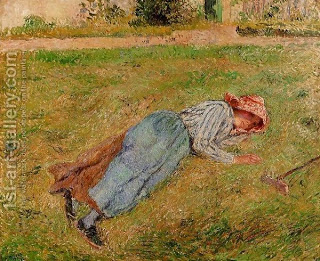

Zevachim 62 - The Place of the Altar
Rabba bar bar Chanah said in the name of Rabbi Yochanan, "When the Jews came back from Babylon to Israel, three prophets (Chaggai, Zechariah, and Malachi) came with them. One testified about the size of the Altar, another - about the position of the Altar, and the third one testified that they may offer sacrifices on the Altar, even though the Temple was not built yet."
Therefore some say that sacrifices can be brought even nowadays . The opponents say that we would be missing not only the Temple, but also many other details for which we need a prophet.
The Altar had a ramp leading to it; the ramp was in the south, while the Altar was in the north. Why? Compare this to a person lying face down, whose thigh (Altar) is in the north, and his head (the ramp) will have to be in the south, following the verse " He shall slaughter it at the side (literally, thigh) of the Altar, in the north ."
Alternatively, the ramp is in the south so that the first turn the Kohen takes is to the right, and all turns a person takes should be to the right.
Art: Camille Pissarro - Resting, Peasant Girl Lying on the Grass, Pontoise